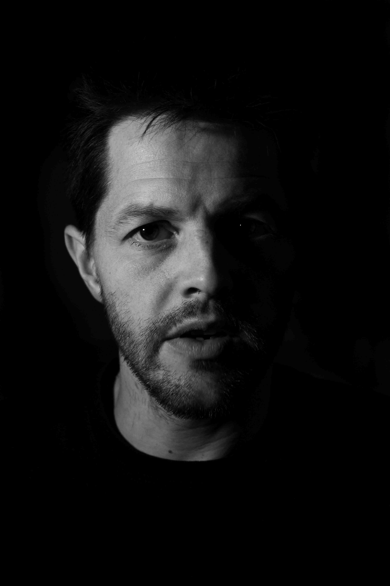

Listen to this page:
Pete is a PhD student working on air pollution and an environmental activist who has been arrested for taking part in protests against the UK government’s continued lack of environmental and climate responsibility.
"Devastated"

He tells me he only became fully aware of the climate crisis a few years ago: “I used to live abroad, I flew everywhere, ate meat, drove a car. I was a product of the system - I didn’t question the media, police, justice, the government. I now live in a world where all of these make me uncomfortable”, he tells me. “I have extreme levels of sadness and anger at times. There’s nothing to stop toxic companies brainwashing students at university career talks - companies that are destroying their futures. It’s f*cking awful. It’s devastating!”
"Humbled"

“I had always achieved what I set out to do in my life”, he says, “but when I learned about the climate crisis and tried to apply the same approach, I got nowhere - I felt I couldn’t do anything to help. It broke me”. He explains that this drove him into a deep depression. “Then I learned more of the reality about racism, climate justice, the inequality of everything. And in the process, I learnt how to be a better person, I think”.
"Furious"

“I recently challenged students organising a career talk from BP - they prevented me from handing out flyers and told the students not to read them! They tried to have me removed”, he tells me. “They surrounded me, telling me that I’d ruined their event, that all the students want is a career and I was preventing them from having that… I exploded with rage. I was furious. I was so enraged! I had to take an hour off and cried on a friend’s shoulder.” We pause for a minute as I struggle not to cry listening to him. “It’s not helpful when I can’t control my fury. But I’m so angry at politicians and the media, worried they will get fired if they act - so GET FIRED! Journalists should be moral, braver than they are. I’m angry with academics - but although they’re victims of a siloed academic system, they are not so naive not to realise that. Society has always needed people to follow the trend, to keep things 'stable', but this time it will kill us. Joining a group like Scientists for Extinction Rebellion has enabled me to find the change-makers, and it saved my life. The feeling I had before, as though I was alone, was terrifying. I was led to believe I was insane. Now I’ve found my community, I feel settled again.”
“Yes, I feel hope”, he says, “Climate awareness and activism has exponentially exploded - that trajectory will continue. The increase of fascist-style governments is a sign that we’re winning - fascism is the only way these polluting companies can continue. We’re at the foothills of fascism, but I don’t think it’s inevitable. I feel this reaction of feeling threatened is essential to create change. So, I do feel hope. But it’s on a knife edge. Activism is the antidote to fascism.”

Visit the project website